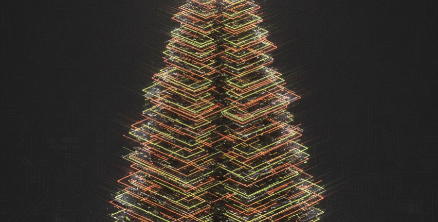

戰鬥陀螺世界賽首度登陸 Roblox：數位×實體的新世代
戰鬥陀螺 X 宣布史上第一場虛擬世界賽——BEYBLADE X-BATTLES WORLD CHAMPIONSHIP 2026 ON ROBLOX，於 2026 年 5 月 15–25 日舉行，玩家在遊戲中攻頂第 100 層即可爭奪世界冠軍。（更新：2026-07-05）

三句話看完
- 史上首場數位世界賽，Roblox 5/15-25 舉行
- 玩家攻頂第 100 層即可爭奪世界冠軍
- 數位練招式，實體發射手感仍是核心樂趣
數位世界賽在玩什麼？
這是官方在「Beyblade Day 2026」公布的重頭戲之一。有別於過去的實體對戰，Roblox 數位世界賽把戰鬥搬進虛擬競技場，玩家一路向上挑戰到第 100 層，登頂者即為冠軍。門檻低、全球都能參與，是把戰鬥陀螺推向新世代玩家的重要一步。
BEYBLADE X-BATTLES 世界賽 2026（Roblox）・速覽
| 形式 | 史上首次數位（虛擬）世界賽 |
| 平台 | Roblox |
| 時間 | 2026/5/15–5/25 |
| 賽制 | 攻頂第 100 層決定世界冠軍 |
資料來源：Anime Corner。本文為新聞整理與新手導覽，Go Shoot 只賣正版、拒絕盜版。
數位方便，但為什麼手感還是要真的玩？
數位賽把入門門檻降到最低，先在遊戲裡認識招式、配裝概念很棒；但戰鬥陀螺真正的樂趣在手上——拉線的力道、發射的角度、金屬撞擊的聲音與火花，是螢幕給不了的。玩過數位、更會想下場感受實體。
- 從數位到實體：在 Go Shoot 中和門市有真實對戰賽場，把遊戲裡的手感練成真的。
- 第一顆正版陀螺：線上一番賞每抽必中，用親民價入手正版 Beyblade X（看一番賞）。
- 看懂規則再上場：從〈得分規則〉到〈發射教學〉，新手也能快速跟上。
玩過數位，來店裡玩真的
中和門市有真實對戰賽場，發射手感線上玩不到。
抽第一顆正版陀螺 →常見問題有哪些？
戰鬥陀螺 Roblox 世界賽什麼時候？
BEYBLADE X-BATTLES WORLD CHAMPIONSHIP 2026 ON ROBLOX 於 2026 年 5 月 15 日至 25 日舉行，是史上第一場數位戰鬥陀螺世界賽。
Roblox 數位世界賽怎麼比？
玩家在 Roblox 遊戲中一路挑戰、攻頂第 100 層，登頂者爭奪世界冠軍。全球玩家都能參與。
玩數位還需要買實體陀螺嗎？
數位賽適合入門與認識招式，但實體發射與對戰的手感是螢幕取代不了的。想真正上手，建議到 Go Shoot 中和門市試打、用一番賞入手第一顆正版。
台灣玩家可以參加嗎？
數位形式門檻低、全球可參與；實體賽事則可留意台灣的分區賽與 Go Shoot 店內活動。